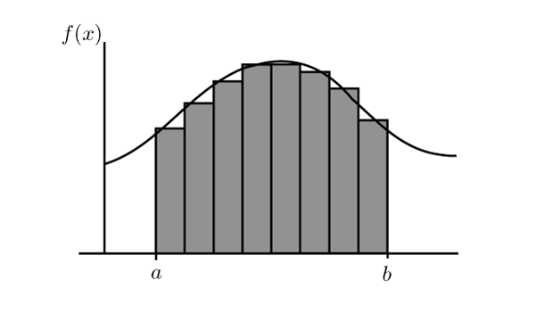

Interpolation
Interpolation
Interpolation is the process of estimating the value of a function between two known values. It is a common problem in numerical analysis and is used in many areas of science and engineering.
Interpolation
The simplest interpolation scheme is linear interpolation:
$$ f(x) = f(x_0) + (x - x_0)\frac{f(x_1) - f(x_0)}{x_1 - x_0} $$What does this do?
Interpolation
It is possible to generalize linear interpolation in a straightforward way. First, we rearrange the terms:
$$ f(x) = \frac{x - x_1}{x_0 - x_1}f(x_0) + \frac{x - x_0}{x_1 - x_0}f(x_1) $$The generalization to second order is:
$$ f(x) = \frac{(x - x_1)(x - x_2)}{(x_0 - x_1)(x_0 - x_2)}f(x_0) + \frac{(x - x_0)(x - x_2)}{(x_1 - x_0)(x_1 - x_2)}f(x_1) + \frac{(x - x_0)(x - x_1)}{(x_2 - x_0)(x_2 - x_1)}f(x_2) $$Interpolation
This generalizes to Lagrange's interpolation formula (polynomial):
$$ f(x) = \sum_{i=0}^N f(x_i) \prod_{j=0, j \neq i}^N \frac{x - x_j}{x_i - x_j} $$The values $\{x_i\}$ are called "nodes", and they are not required to be evenly spaced, but they need to be distinct, $x_i \neq x_j$.
An $n$-th order interpolation requires $n+1$ unique nodes, and Lagrange's formula is the unique lowest order polynomial that interpolates the given data.
Interpolation
However, Lagrange's formula suffers from a serious issue: Runge's phenomenon
If interpolation is done using equally spaced points, the interpolated function is susceptible to strong oscillations near the domain boundaries.
Numerical Integration
Numerical Integration
The ordinary Riemann integral is defined as the limit:
$$ \int_a^b f(x) dx = \lim_{n \to \infty} \sum_{i=0}^n f(x_i) \Delta x $$ Numerical Integration
The definition of Riemann integral can be used to calculate the numerical value:
$$ \int_a^b f(x) dx \approx \sum_{0=1}^N f(x_i) \Delta x $$Numerical Integration
However, a simple improvement is to use averages of function values:
$$ \int_a^b f(x) dx \approx \sum_{i=0}^{N-1} \frac{1}{2}\left(f(x_i) + f(x_{i + 1})\right) \Delta x $$This is called the Trapezoidal rule:
Essentially, we replace the function with its linear interpolation between the grid points.
Trapezoidal Rule
For a function $f(x)$, the trapezoidal rule is:
$$ \int_a^b f(x) dx \approx \frac{1}{2}\left[f(a) + f(b)\right] (b - a) $$The extended Trapezoidal rule is:
$$ \int_a^b f(x) dx \approx \left[\frac{1}{2}f(a) + f(x_1) + f(x_2) + \dots + f(x_{N-1}) + \frac{1}{2}f(b)\right]\Delta x $$Trapezoidal Rule
How to estimate the error of the trapezoidal rule?
Consider the Taylor expansion of $f(x)$ around $x = a$:
$$ f(x) = f(a) + f'(a)(x - a) + \frac{1}{2}f''(a)(x - a)^2 + \dots $$Integrate both sides from $a$ to $b$:
$$ \begin{align} \int_a^b f(x) dx &= \int_a^b f(a) dx + \int_a^b f'(a)(x - a) dx + \int_a^b \frac{1}{2}f''(a)(x - a)^2 dx + \dots \\ &= f(a)(b - a) + \frac{1}{2}f'(a)(b - a)^2 + \frac{1}{6}f''(a)(b - a)^3 + \dots \\ &= f(a)h + \frac{1}{2}f'(a)h^2 + \frac{1}{6}f''(a)h^3 + \dots \end{align} $$Trapezoidal Rule
We can also expand $f(x)$ around $x = b$:
$$ f(x) = f(b) + f'(b)(x - b) + \frac{1}{2}f''(b)(x - b)^2 + \dots $$Integrate both sides from $a$ to $b$:
$$ \begin{align} \int_a^b f(x) dx &= \int_a^b f(b) dx + \int_a^b f'(b)(x - b) dx + \int_a^b \frac{1}{2}f''(b)(x - b)^2 dx + \dots \\ &= f(b)(b - a) - \frac{1}{2}f'(b)(b - a)^2 + \frac{1}{6}f''(b)(b - a)^3 + \dots \\ &= f(b)h - \frac{1}{2}f'(b)h^2 + \frac{1}{6}f''(b)h^3 + \dots \\ \end{align} $$Trapezoidal Rule
Taking the average of these two approximations:
$$ \int_a^b f(x) dx = \frac{1}{2}h\left[f(a) + f(b)\right] + \frac{1}{4}h^2\left[f'(a) - f'(b)\right] + \frac{1}{12}h^3\left[f''(a) + f''(b)\right] + O(h^4) $$The first term is our trapezoidal rule. Now lets divide the interval $[a, b]$ into $N$ intervals from $x_0$ to $x_N$, and use the above formula for each interval:
$$ \begin{align} \int_a^b f(x) dx &= \sum_{i=0}^{N-1} \int_{x_i}^{x_{i+1}} f(x) dx \\ &= \sum_{i=0}^{N-1} \frac{1}{2}h\left[f(x_i) + f(x_{i+1})\right] + \frac{1}{12}h^2\left[f'(a) - f'(b)\right] + O(h^4) \end{align} $$Trapezoidal Rule
The error term is called the Euler-Maclaurin formula, which characterizes the difference between a definite integral and a closely related sum:
$$ \varepsilon = \frac{1}{12}h^2\left[f'(a) - f'(b)\right] + O(h^4) $$This tells us that trapezoidal rule is a first-order integration rule, since its error is second order.
The rest of the Euler-Maclaurin formula gives error to all orders:
$$ \varepsilon = \sum_{k=1}^\infty \frac{B_{2k}}{(2k)!}h^{2k}\left[f^{(2k-1)}(a) - f^{(2k-1)}(b)\right] $$where $B_{2k}$ are called Bernoulli numbers
Simpson's rule

Simpson's rule
$$ \int_a^b f(x) dx \approx \sum_{k=0}^{N/2-1} \frac{1}{3}\left[f(x_{2k}) + 4f(x_{2k+1}) + f(x_{2k+2})\right] \Delta x $$Note that the summation covers 2 intervals at a time. This is called the Simpson's rule:
Simpson's rule
Where trapezoidal rule uses a linear interpolation for $f(x)$ between grid points, Simpson's rule uses a quadratic interpolation
Simpson's rule
We can write out the full expression for Simpson's rule:
$$ \int_a^b f(x) dx \approx \frac{1}{3}\left[f(a) + 4f(x_1) + 2f(x_2) + \dots + 2f(x_{N-2}) + 4f(x_{N-1}) + f(b)\right]\Delta x $$The error of Simpson's rule is:
$$ \varepsilon = \frac{1}{90}h^4\left[f^{(4)}(a) - f^{(4)}(b)\right] + O(h^6) $$Simpson's rule is a 3rd-order integration rule, with 4th order error. It's significantly more accurate than trapezoidal rule. This is because the Euler-Maclaurin formula does not have odd-powered terms.